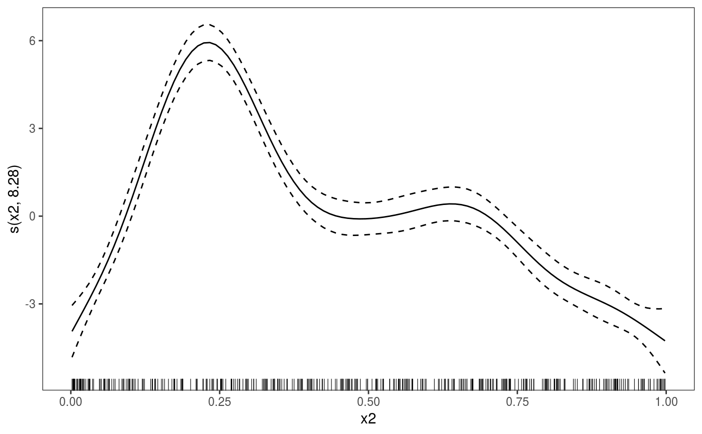

These are wrappers that fit GAM models using mgcv::gamm or gamm4::gamm4 and
convert them to a gamViz object using the getViz function.
It is essentially a shortcut.
gamm4V(formula, random, family = gaussian(), data = list(), REML = TRUE, aGam = list(), aViz = list(), keepGAMObj = FALSE) gammV(formula, random, family = gaussian(), data = list(), method = "REML", aGam = list(), aViz = list(), keepGAMObj = FALSE)
| formula, random, family, data | same arguments as in mgcv::gamm or gamm4::gamm4. |
|---|---|
| REML | same as in gamm4::gamm4 |
| aGam | list of further arguments to be passed to mgcv::gamm or gamm4::gamm4. |
| aViz | list of arguments to be passed to getViz. |
| keepGAMObj | if |
| method | same as in mgcv::gamm |
An object of class "gamViz" which can, for instance, be plotted using plot.gamViz. Also the object has the following additional elements:
lme mixed model as in mgcv::gamm
mer mixed model as in gamm4::gamm4
gam a copy of the gamViz Object if setting keepGAMObj = TRUE.
WARNING: Model comparisons (e.g. with anova) should only be done using the mixed model part as described in gamm4::gamm4.
For mgcv::gamm please refer to the original help file.
##### gam example library(mgcViz) # Simulate data dat <- gamSim(1,n=400,scale=2) ## simulate 4 term additive truth#> Gu & Wahba 4 term additive model## Now add 20 level random effect `fac'... dat$fac <- fac <- as.factor(sample(1:20,400,replace=TRUE)) dat$y <- dat$y + model.matrix(~fac-1) %*% rnorm(20) * 0.5 br <- gammV(y~s(x0)+x1+s(x2), data=dat,random=list(fac=~1))#> Warning: non-list contrasts argument ignoredsummary(br)#> #> Family: gaussian #> Link function: identity #> #> Formula: #> y ~ s(x0) + x1 + s(x2) #> #> Parametric coefficients: #> Estimate Std. Error t value Pr(>|t|) #> (Intercept) 4.4441 0.2391 18.58 <2e-16 *** #> x1 6.3160 0.3658 17.27 <2e-16 *** #> --- #> Signif. codes: 0 ‘***’ 0.001 ‘**’ 0.01 ‘*’ 0.05 ‘.’ 0.1 ‘ ’ 1 #> #> Approximate significance of smooth terms: #> edf Ref.df F p-value #> s(x0) 3.561 3.561 13.59 3.63e-09 *** #> s(x2) 8.277 8.277 78.83 < 2e-16 *** #> --- #> Signif. codes: 0 ‘***’ 0.001 ‘**’ 0.01 ‘*’ 0.05 ‘.’ 0.1 ‘ ’ 1 #> #> R-sq.(adj) = 0.711 #> Scale est. = 4.3612 n = 400plot(br)#> Hit <Return> to see next plot:#> Hit <Return> to see next plot:#> Linear mixed-effects model fit by REML #> Data: strip.offset(mf) #> AIC BIC logLik #> 1794.035 1825.886 -889.0176 #> #> Random effects: #> Formula: ~Xr - 1 | g #> Structure: pdIdnot #> Xr1 Xr2 Xr3 Xr4 Xr5 Xr6 Xr7 Xr8 #> StdDev: 2.277582 2.277582 2.277582 2.277582 2.277582 2.277582 2.277582 2.277582 #> #> Formula: ~Xr.0 - 1 | g.0 %in% g #> Structure: pdIdnot #> Xr.01 Xr.02 Xr.03 Xr.04 Xr.05 Xr.06 Xr.07 Xr.08 #> StdDev: 22.89384 22.89384 22.89384 22.89384 22.89384 22.89384 22.89384 22.89384 #> #> Formula: ~1 | fac %in% g.0 %in% g #> (Intercept) Residual #> StdDev: 0.5101666 2.088341 #> #> Fixed effects: y.0 ~ X - 1 #> Value Std.Error DF t-value p-value #> X(Intercept) 4.444137 0.2391326 377 18.584404 0.0000 #> Xx1 6.316044 0.3658366 377 17.264660 0.0000 #> Xs(x0)Fx1 0.579127 0.7092469 377 0.816538 0.4147 #> Xs(x2)Fx1 3.409999 2.0166404 377 1.690931 0.0917 #> Correlation: #> X(Int) Xx1 X(0)F1 #> Xx1 -0.759 #> Xs(x0)Fx1 -0.006 0.005 #> Xs(x2)Fx1 0.038 -0.050 -0.021 #> #> Standardized Within-Group Residuals: #> Min Q1 Med Q3 Max #> -3.526741115 -0.601897375 -0.001453839 0.676182616 3.304378003 #> #> Number of Observations: 400 #> Number of Groups: #> g g.0 %in% g fac %in% g.0 %in% g #> 1 1 20# NOT RUN { ## gamm4::gamm4 example br4 <- gamm4V(y~s(x0)+x1+s(x2),data=dat,random=~(1|fac)) summary(br4) plot(br4) summary(br4$mer) # }